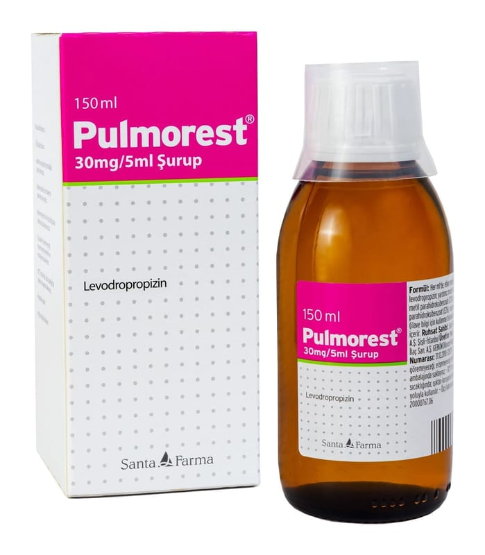

Pulmorest 30 mg/5 ml Şurup, 200 ml

Ne için kullanılır
KT · Bölüm 1PULMOREST ®, 150 ve 200 ml’lik bal renkli cam şişede, 10 ml’lik ölçeği ile birlikte sunulur. Renksiz-hafif sarı renkli, berrak çözelti görünümündedir. PULMOREST®etkin madde olarak levodropropizin içerir. Çeşitli nedenlere bağlı kuru öksürüğün giderilmesinde kullanılır.